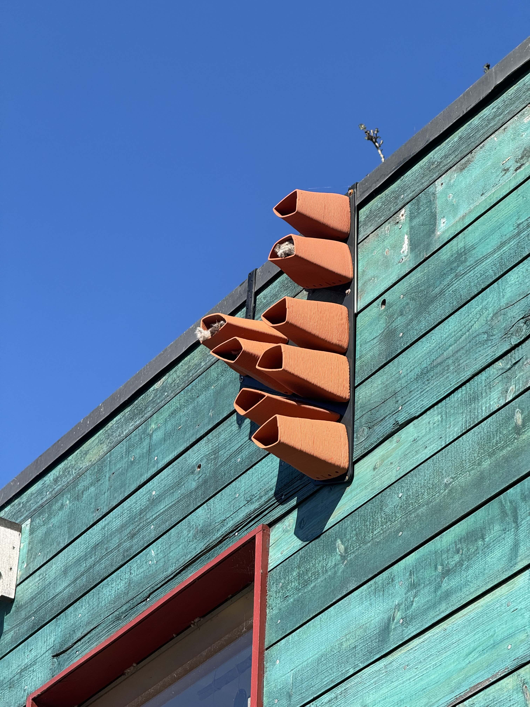
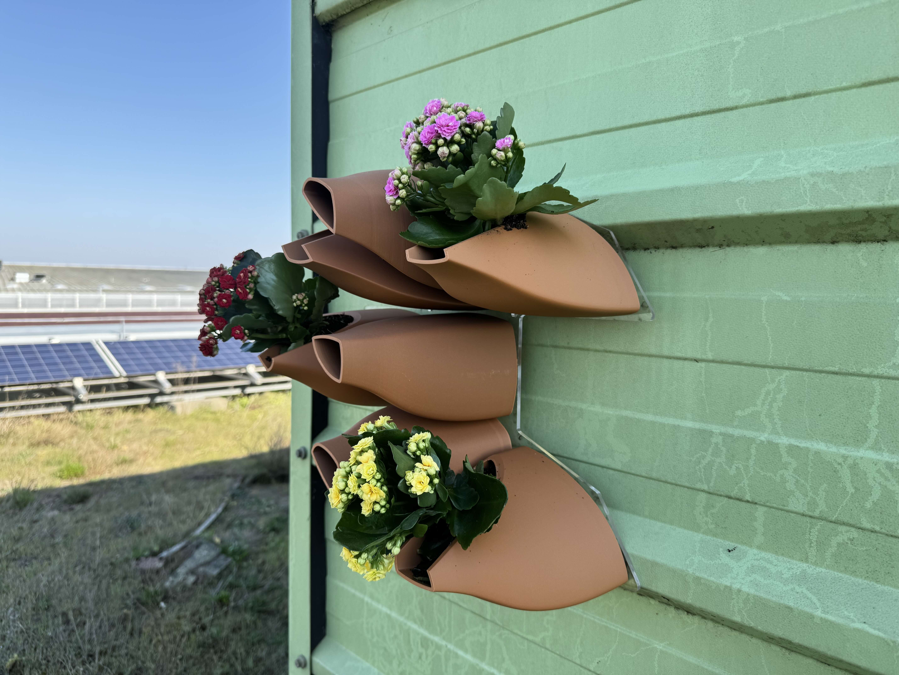
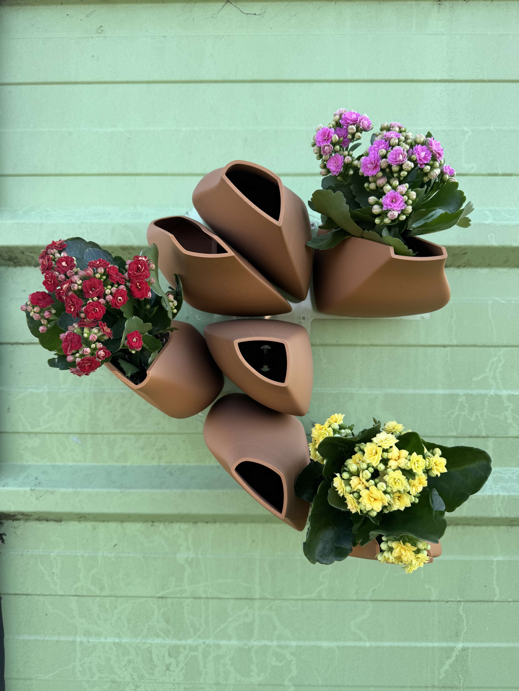

FAUNA — façade habitat system designed for Phyta Biodesign
FAUNA is a bioreceptive facade system designed to provide habitat for birds and insects. The modules leverage computational design and digital fabrication to improve the biodiversity of the built environment. Modules were redesigned to integrate environmental and species data. Digital fabrication techniques are leveraged to produce a design that is site-specific and modular.

Version 1.0 — pilot study
3D printed ceramic modules installed on site at Cody Dock in Canning Town, London. Bioreceptive ceramic enhances the module's ability to host growth of moss and lichen.

Version 2.0 — computational design + fabrication iteration
Fauna designed for use by London Priority Bird Species. These modules integrate wren species data and requirements into parametric Grasshopper script. Attributes such as aperture opening size prevent predation by larger birds. Height along the facade is optimized for wren nesting patterns. Internal volume provides sufficient space for species-spcific nesting needs.

Install — context
Installed pieces at site on the roof of Here East in Hackney Wick, London. Modules are printed from a composite material made of PLA and wood fibers. Using consumer-grade printers allows for quick and cheap iteration of the product. Lightweight and robust biomaterial improves ease of installation compared to ceramic and gives the system a lighter weight on building facades. It is crucial to reduce overall weight when installing the product across many square meters of facade surface.

Site Survey — technical drawing
Site survey document prepared for client to describe the installation locations and logic.
.jpeg)
Site Survey — technical drawing
Installation detail prepared to describe the method of installation. Specced and coordinated all component sourcing from custom CNC'd steel panels to bespoke clamp system.